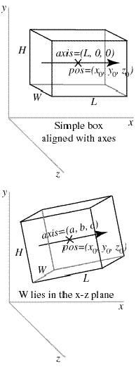

| Visual Reference |
In the first diagram we show a simple example of a box object:
The given position is in the center of the box, at (x0, y0, z0). This is different from cylinder, whose pos attribute is at one end of the cylinder. Just as with a cylinder, we can refer to the individual vector components of the box as mybox.x, mybox.y, and mybox.z. The length (along the x axis) is L , the height (along the y axis) is H , and the width is W (along the z axis). For this box, we have mybox.axis = (L, 0, 0) . Note that the axis of a box is just like the axis of a cylinder.
For a box that isn't aligned with the coordinate axes, additional issues come into play. The orientation of the length of the box is given by the axis (see second diagram):
The axis attribute gives a direction for the length of the box, and the length, height, and width of the box are given as before (if a length attribute is not given, the length is set to the magnitude of the axis vector).
There remains the issue of how to orient the box rotationally around the specified axis. The rule that Visual uses is to orient the width to lie in a plane perpendicular to the display "up" direction, which by default is the y axis. Therefore in the diagram you see that the width lies parallel to the x-z plane. The height of the box is oriented perpendicular to the width, and to the specified axis of the box. It helps to think of length initially as going along the x axis, height along the y axis, and width along the z axis, and when the axis is tipped the width stays in the x-z plane.
You can rotate the box around its own axis by changing which way is "up" for the box, by specifying an up attribute for the box that is different from the up vector of the coordinate system:
With this statement, the width of the box will lie in a plane perpendicular to the (q,r,s) vector, and the height of the box will be perpendicular to the width and to the (a,b,c) vector.
The box object has the following attributes and default values, like those for cylinders: pos (0,0,0), x (0), y(0), z(0), axis (1,0,0), length (1), color (1,1,1) which is color.white, red (1), green (1), blue (1), and up (0,1,0). Additional box attributes:
height In the y direction in the simple case, default is 1
width In the z direction in the simple case, default is 1
size (length, height,
width), default is (1,1,1)
mybox.size=(20,10,12) sets length=20, height=10,
width=12
Note that the pos attribute for cylinder, arrow, cone, and pyramid corresponds to one end of the object, whereas for a box, sphere, or ring it corresponds to the center of the object.